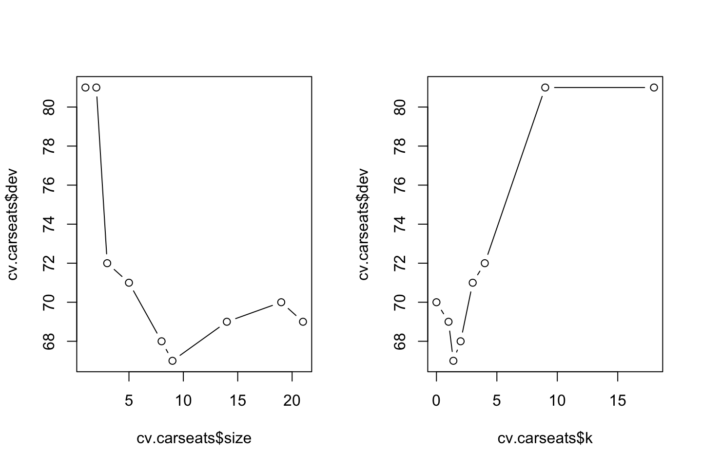
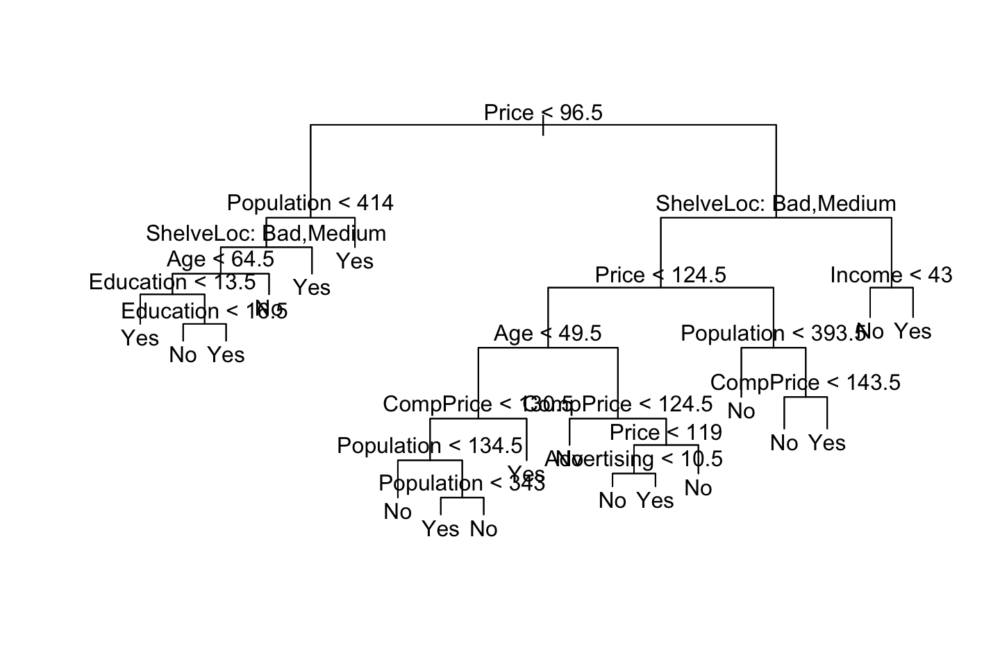
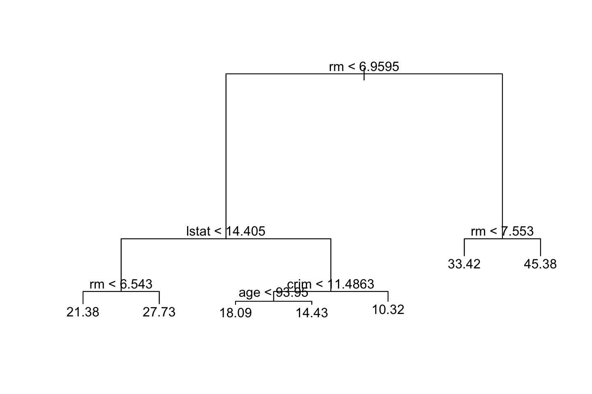
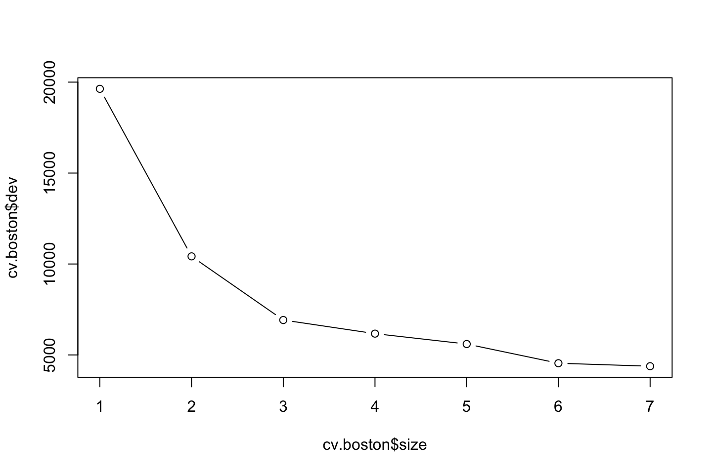
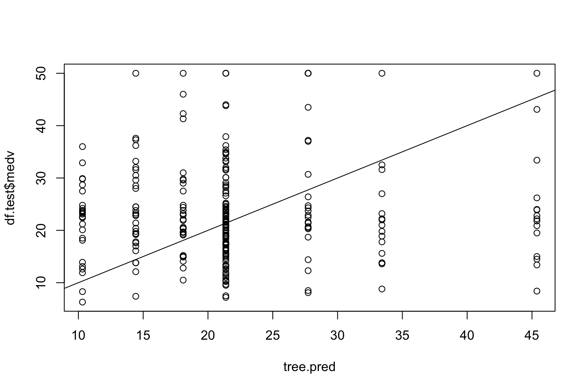
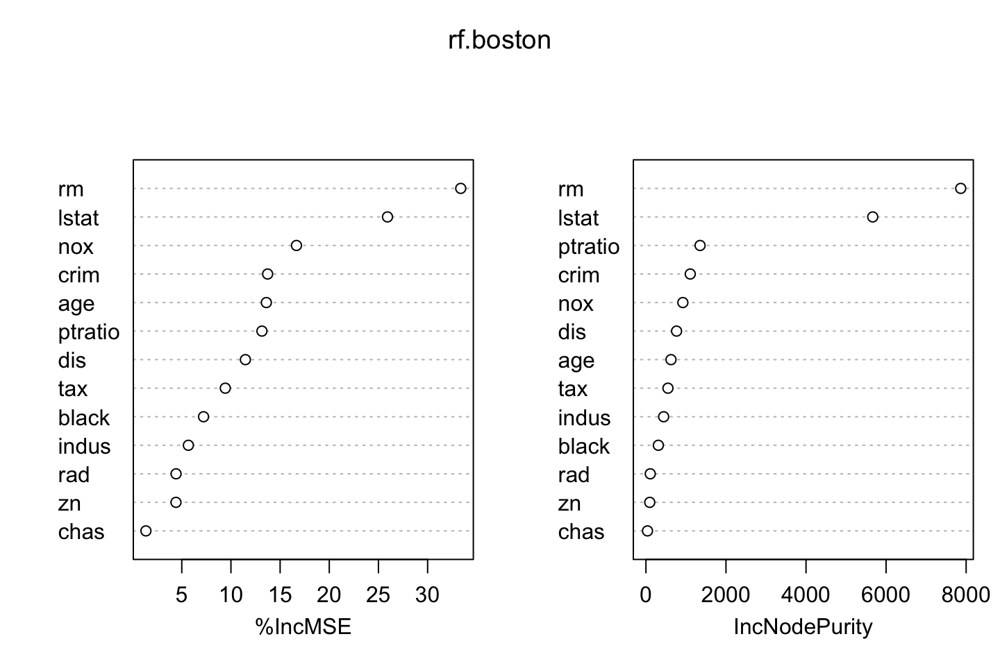

3.4 Lab section
3.4.1 Fitting Classification Trees
library(tree)We want to use the carseats data, where sales = Unit sales (in thousands) at each location. We want to predict whether they sold more or less than 8.000, i.e. 8 as the variable is encoded in thousands.
library(ISLR)
df <- Carseats
High <- ifelse(df$Sales <= 8,"No","Yes")Merging the vector and the data set.
df <- data.frame(Carseats,High)
df$High <- as.factor(df$High)We now want to predict the High variable.
tree.carseats <- tree(formula = High ~ . - Sales
,data = df)
summary(tree.carseats)##
## Classification tree:
## tree(formula = High ~ . - Sales, data = df)
## Variables actually used in tree construction:
## [1] "ShelveLoc" "Price" "Income" "CompPrice" "Population"
## [6] "Advertising" "Age" "US"
## Number of terminal nodes: 27
## Residual mean deviance: 0.4575 = 170.7 / 373
## Misclassification error rate: 0.09 = 36 / 400- We see the variables that are included
- We see that there are 27 terminal nodes
- Information about the error (deviance) and the missclassification rate = 9%
The deviance reported is from the calculation:
\[\begin{equation} -2\sum_m\sum_kn_{mk}log\hat{p}_{mk} \tag{3.5} \end{equation}\]
Where:
- \(n_{mk}\) = the number of observations in the mth terminal node, that belong to the kth class.
A small deviance = low error, hence a good fit to the train data.
Thus similar to the RSS calculation that we have seen earlier.
we find the residual mean deviance to be:
\[\begin{equation} \frac{Deviance}{n-|T_0|} \tag{3.6} \end{equation}\]
Hence
\[\frac{170.7}{(400-27)}=373\]
Where \(T_0\) is the unpruned tree, which we see is with 27 terminal nodes. And \(n\) is merely the amount of observations.
PLotting the tree:
plot(tree.carseats)
text(tree.carseats
,pretty = 0)
We see that the tree. Notice on the right side, we see that price occurs twice. This is probably due to purity and more certainty on the predictions.
We see that Shelve Location Bad and Medium appear to be the best predictor. As we start out with that variable.
tree.carseats[1] #Added [1] to get it in a table## $frame
## var n dev yval splits.cutleft splits.cutright yprob.No
## 1 ShelveLoc 400 541.486837 No :ac :b 0.59000000
## 2 Price 315 390.591685 No <92.5 >92.5 0.68888889
## 4 Income 46 56.534305 Yes <57 >57 0.30434783
## 8 CompPrice 10 12.217286 No <110.5 >110.5 0.70000000
## 16 <leaf> 5 0.000000 No 1.00000000
## 17 <leaf> 5 6.730117 Yes 0.40000000
## 9 Population 36 35.467463 Yes <207.5 >207.5 0.19444444
## 18 <leaf> 16 21.170024 Yes 0.37500000
## 19 <leaf> 20 7.940610 Yes 0.05000000
## 5 Advertising 269 299.758669 No <13.5 >13.5 0.75464684
## 10 CompPrice 224 213.232590 No <124.5 >124.5 0.81696429
## 20 Price 96 44.887998 No <106.5 >106.5 0.93750000
## 40 Population 38 33.148337 No <177 >177 0.84210526
## 80 Income 12 16.300638 No <60.5 >60.5 0.58333333
## 160 <leaf> 6 0.000000 No 1.00000000
## 161 <leaf> 6 5.406735 Yes 0.16666667
## 81 <leaf> 26 8.477229 No 0.96153846
## 41 <leaf> 58 0.000000 No 1.00000000
## 21 Price 128 150.181878 No <122.5 >122.5 0.72656250
## 42 ShelveLoc 51 70.681403 Yes :a :c 0.49019608
## 84 <leaf> 11 6.701994 No 0.90909091
## 85 Price 40 52.925059 Yes <109.5 >109.5 0.37500000
## 170 <leaf> 16 7.481333 Yes 0.06250000
## 171 Age 24 32.601277 No <49.5 >49.5 0.58333333
## 342 <leaf> 13 16.048286 Yes 0.30769231
## 343 <leaf> 11 6.701994 No 0.90909091
## 43 CompPrice 77 55.542945 No <147.5 >147.5 0.88311688
## 86 <leaf> 58 17.399411 No 0.96551724
## 87 Price 19 25.008180 No <147 >147 0.63157895
## 174 CompPrice 12 16.300638 Yes <152.5 >152.5 0.41666667
## 348 <leaf> 7 5.741628 Yes 0.14285714
## 349 <leaf> 5 5.004024 No 0.80000000
## 175 <leaf> 7 0.000000 No 1.00000000
## 11 Age 45 61.826542 Yes <54.5 >54.5 0.44444444
## 22 CompPrice 25 25.020121 Yes <130.5 >130.5 0.20000000
## 44 Income 14 18.249184 Yes <100 >100 0.35714286
## 88 <leaf> 9 12.365308 No 0.55555556
## 89 <leaf> 5 0.000000 Yes 0.00000000
## 45 <leaf> 11 0.000000 Yes 0.00000000
## 23 CompPrice 20 22.493406 No <122.5 >122.5 0.75000000
## 46 <leaf> 10 0.000000 No 1.00000000
## 47 Price 10 13.862944 No <125 >125 0.50000000
## 94 <leaf> 5 0.000000 Yes 0.00000000
## 95 <leaf> 5 0.000000 No 1.00000000
## 3 Price 85 90.327606 Yes <135 >135 0.22352941
## 6 US 68 49.260636 Yes :a :b 0.11764706
## 12 Price 17 22.074444 Yes <109 >109 0.35294118
## 24 <leaf> 8 0.000000 Yes 0.00000000
## 25 <leaf> 9 11.457255 No 0.66666667
## 13 <leaf> 51 16.875237 Yes 0.03921569
## 7 Income 17 22.074444 No <46 >46 0.64705882
## 14 <leaf> 6 0.000000 No 1.00000000
## 15 <leaf> 11 15.158203 Yes 0.45454545
## yprob.Yes
## 1 0.41000000
## 2 0.31111111
## 4 0.69565217
## 8 0.30000000
## 16 0.00000000
## 17 0.60000000
## 9 0.80555556
## 18 0.62500000
## 19 0.95000000
## 5 0.24535316
## 10 0.18303571
## 20 0.06250000
## 40 0.15789474
## 80 0.41666667
## 160 0.00000000
## 161 0.83333333
## 81 0.03846154
## 41 0.00000000
## 21 0.27343750
## 42 0.50980392
## 84 0.09090909
## 85 0.62500000
## 170 0.93750000
## 171 0.41666667
## 342 0.69230769
## 343 0.09090909
## 43 0.11688312
## 86 0.03448276
## 87 0.36842105
## 174 0.58333333
## 348 0.85714286
## 349 0.20000000
## 175 0.00000000
## 11 0.55555556
## 22 0.80000000
## 44 0.64285714
## 88 0.44444444
## 89 1.00000000
## 45 1.00000000
## 23 0.25000000
## 46 0.00000000
## 47 0.50000000
## 94 1.00000000
## 95 0.00000000
## 3 0.77647059
## 6 0.88235294
## 12 0.64705882
## 24 1.00000000
## 25 0.33333333
## 13 0.96078431
## 7 0.35294118
## 14 0.00000000
## 15 0.54545455We are able to see the following from the print:
- Variable
- Criterion
- Observations in the criterion, i.e. branch
- The deviance
- The overall prediction for the branch
- The fraction of observations in that branch that take on values 1 and 0 (Y/N).
We also see that branches that leads to a terminal node is marked with an "*".
Notice, that the ShelveLoc Says a and c for cut left. That is because the categories are not ordered. We can inspect the order with contrasts()
contrasts(df$ShelveLoc)## Good Medium
## Bad 0 0
## Good 1 0
## Medium 0 1Where it is ranked, bad, good, medium. Perhaps it could have been ordered correctly. But it does not matter when we are working with a decision tree, as it is purely data driven.
Using test and train data
set.seed(2)
index <- sample(1:nrow(df),size = 200)
df.train <- df[index,]
df.test <- df[-index,]
tree.carseats <- tree(High ~ . - Sales,data = df.train)
tree.pred <- predict(tree.carseats,newdata = df.test,type = "class")
library(caret)
confusionMatrix(data = tree.pred,reference = df.test$High,positive = "Yes")## Confusion Matrix and Statistics
##
## Reference
## Prediction No Yes
## No 104 33
## Yes 13 50
##
## Accuracy : 0.77
## 95% CI : (0.7054, 0.8264)
## No Information Rate : 0.585
## P-Value [Acc > NIR] : 0.00000002938
##
## Kappa : 0.5091
##
## Mcnemar's Test P-Value : 0.005088
##
## Sensitivity : 0.6024
## Specificity : 0.8889
## Pos Pred Value : 0.7937
## Neg Pred Value : 0.7591
## Prevalence : 0.4150
## Detection Rate : 0.2500
## Detection Prevalence : 0.3150
## Balanced Accuracy : 0.7456
##
## 'Positive' Class : Yes
## We see a sensitivity of 60% and specificity of 88%
Pruning the tree
It is likely that we are able to improve the model by pruning the tree. That is performed in the following.
set.seed(1337)
cv.carseats <- cv.tree(object = tree.carseats
,FUN = prune.misclass) # we are pruning to optimize against misclassifications
#Listing objects in the cv.carseats
names(cv.carseats)## [1] "size" "dev" "k" "method"
#Retrieving informaiton in the object
cv.carseats## $size
## [1] 21 19 14 9 8 5 3 2 1
##
## $dev
## [1] 69 70 69 67 68 71 72 81 81
##
## $k
## [1] -Inf 0.0 1.0 1.4 2.0 3.0 4.0 9.0 18.0
##
## $method
## [1] "misclass"
##
## attr(,"class")
## [1] "prune" "tree.sequence"Size: This is the size of the subtrees created
dev: The cross-validation error rate in this instance. We want to select the tree that yields the lowest error rate, that appear to be tree no. 4 with 9 terminal nodes.
k: Recall that we prune trees based on the tuning parameter \(\alpha\), see equation (3.3). This is corresponding to k.
par(mfrow = c(1,2))
plot(x = cv.carseats$size,y = cv.carseats$dev,type = "b")
plot(x = cv.carseats$k,y = cv.carseats$dev,type = "b")
We new apply the prune.misclass() function in order to prune the tree to obtain the nine-node tree.
prune.carseats <- prune.misclass(tree.carseats
,best = 9) #We want to inspect a tree of size 9
par(mfrow = c(1,1))
{plot(prune.carseats)
text(prune.carseats,pretty = 0)}
tree.pred <- predict(object = prune.carseats,newdata = df.test,type = "class")
confusionMatrix(tree.pred,reference = df.test$High,positive = "Yes")## Confusion Matrix and Statistics
##
## Reference
## Prediction No Yes
## No 97 25
## Yes 20 58
##
## Accuracy : 0.775
## 95% CI : (0.7108, 0.8309)
## No Information Rate : 0.585
## P-Value [Acc > NIR] : 0.00000001206
##
## Kappa : 0.5325
##
## Mcnemar's Test P-Value : 0.551
##
## Sensitivity : 0.6988
## Specificity : 0.8291
## Pos Pred Value : 0.7436
## Neg Pred Value : 0.7951
## Prevalence : 0.4150
## Detection Rate : 0.2900
## Detection Prevalence : 0.3900
## Balanced Accuracy : 0.7639
##
## 'Positive' Class : Yes
## We see that we have both improved the sensitivity to 69.9% and the specificity to 82.9% from respectively 60% and 88%.
The overall accuracy is 77.5%.
We can show the accuracy of other trees as well. But these will perform worse.
prune.carseats <- prune.misclass(tree.carseats,best = 15)
{plot(prune.carseats)
text(prune.carseats,pretty = 0)}
tree.pred <- predict(object = prune.carseats,newdata = df.test,type = "class")
#Confusion matrix
confusionMatrix(data = tree.pred,reference = df.test$High,positive = "Yes")## Confusion Matrix and Statistics
##
## Reference
## Prediction No Yes
## No 102 30
## Yes 15 53
##
## Accuracy : 0.775
## 95% CI : (0.7108, 0.8309)
## No Information Rate : 0.585
## P-Value [Acc > NIR] : 0.00000001206
##
## Kappa : 0.5241
##
## Mcnemar's Test P-Value : 0.03689
##
## Sensitivity : 0.6386
## Specificity : 0.8718
## Pos Pred Value : 0.7794
## Neg Pred Value : 0.7727
## Prevalence : 0.4150
## Detection Rate : 0.2650
## Detection Prevalence : 0.3400
## Balanced Accuracy : 0.7552
##
## 'Positive' Class : Yes
## We see that the overall accuracy is actually the same, but the sensitivity and specificity is worse.
3.4.2 Fitting Regression Trees
We use the Boston data set.
library(MASS)
set.seed(1)
df <- Boston
index <- sample(x = nrow(df),size = nrow(df)/2)
df.train <- df[index,]
df.test <- df[-index,]
tree.boston <- tree(medv ~ .,data = df.train)
summary(tree.boston)##
## Regression tree:
## tree(formula = medv ~ ., data = df.train)
## Variables actually used in tree construction:
## [1] "rm" "lstat" "crim" "age"
## Number of terminal nodes: 7
## Residual mean deviance: 10.38 = 2555 / 246
## Distribution of residuals:
## Min. 1st Qu. Median Mean 3rd Qu. Max.
## -10.1800 -1.7770 -0.1775 0.0000 1.9230 16.5800For the interpretation hereof, i refer to section 3.4.1. But notice, that we are now wirking with a continous response variable, hence deviance = RSS, also found equation (3.1).
We can now plot the tree.
{plot(tree.boston)
text(tree.boston,pretty = 0)}
Recall that the Y variable is median value of owner-occupied homes in $1000s. We see that the predicted median house price is 45,380 when the amount of rooms are over 7.5.
Let us now use cross validation to see whether pruning the tree will improve the model.
cv.boston <- cv.tree(tree.boston)
plot(x = cv.boston$size,y = cv.boston$dev,type = "b")
We see that as the tree size increases. This in this case it does not appear to improve the model with pruning the tree.
However, let us say, that we know that we want to prune the tree. Then we can do the following:
prune.boston <- prune.tree(tree = tree.boston,best = 5) #5 terminal nodes
{plot(prune.boston)
text(prune.boston,pretty = 0)}
tree.pred <- predict(object = tree.boston,newdata = df.train)
{plot(tree.pred,df.test$medv)
abline(a = 0,b = 1)}
mean((tree.pred - df.test$medv)^2)## [1] 153.5446We see an MSE of 153.5.
3.4.3 Bagging and Random Forests
Notice that bagging and random forests are basically the same. Where random forests merely tweak the bagging trees with a random selection of IV, instead of the model always being able to select all models. Therefore, it can also be said that \(m = p\), and thus the same function can be applied to both bagging and random forests.
3.4.3.1 Bagging
library(MASS)
df <- Boston
index <- sample(x = nrow(df),size = nrow(df)/2)
df.train <- df[index,]
df.test <- df[-index,]library(randomForest)
set.seed(1)
bag.boston <- randomForest(medv ~ .,data = df.train,mtry = 13,importance = TRUE)
bag.boston##
## Call:
## randomForest(formula = medv ~ ., data = df.train, mtry = 13, importance = TRUE)
## Type of random forest: regression
## Number of trees: 500
## No. of variables tried at each split: 13
##
## Mean of squared residuals: 14.45243
## % Var explained: 81.83We see that we have constructed 500 trees and tried 13 (all) variables at each split.
bag.pred <- predict(object = bag.boston,newdata = df.test)
plot(x = bag.pred,y = df.test$medv)
abline(0,1)
mean((bag.pred-df.test$medv)^2) #MSE## [1] 19.81565We see that the MSE is 19.8 which is an immense improvement.
Notice, that we also have specified how many trees we want to grow:
set.seed(1)
bag.boston <- randomForest(medv ~ .,data = df.train,mtry = 13,ntrees = 25,importance = TRUE)
bag.pred <- predict(object = bag.boston,newdata = df.test)
mean((bag.pred-df.test$medv)^2) #MSE## [1] 19.81565We see that the MSE is a bit higher than before. That is also intuitively correct, although with bagging we are actually also at risk of overfitting the data by growing too many trees, as it is likely that the trees are similar. To overcome this risk, we can grow a random forest instead, that is done in the following.
3.4.3.2 Random Forest
We use the same procedure except that we use fewer variables under evaluation. By default R follows a rule of thumb with \(\frac{p}{3}\) for regression and \(\sqrt{p}\) for classification. In this example, we use 6 variables.
set.seed(1)
rf.boston <- randomForest(medv ~ .,data = df.train,mtry = 6,importance = TRUE)
rf.pred <- predict(object = rf.boston,newdata = df.test)
mean((rf.pred-df.test$medv)^2) #MSE## [1] 16.4081Now we see that the model is even better, with MSE of 16.4.
We can use importance() to interprete the variables.
importance(rf.boston)## %IncMSE IncNodePurity
## crim 13.732304 1107.67668
## zn 4.410510 95.63934
## indus 5.670870 443.23264
## chas 1.353168 39.59940
## nox 16.662050 923.03154
## rm 33.368987 7865.44385
## age 13.600352 626.64334
## dis 11.469812 765.61445
## rad 4.417249 108.77438
## tax 9.424190 550.22440
## ptratio 13.150528 1353.27803
## black 7.213603 310.30963
## lstat 25.921218 5666.64169We see that rm (rooms pr. dwelling) has the highest influence on the model performance, and we see by removing this variable, the error increase by 32.3.
We also see that rm leads to the highest purity impact.
Notice, that these metrics are based on the train data.
The data above can also be plotted with.
varImpPlot(rf.boston)
Where we see that the varaibles are ranked according to the metrics.
3.4.4 Boosting
Recall that this model initially fits a tree to the data and then afterwards fits consecutive models to the residuals of that model. This is why it is also called gradient boosting.
library(gbm)
set.seed(1)
boost.boston <- gbm(medv ~ .
,data = df.train
,distribution = "gaussian" #Since it is regression
,n.trees = 5000
,interaction.depth = 4
) #Lambda is by default = 0.001
summary(boost.boston)| var | rel.inf | |
|---|---|---|
| rm | rm | 35.8641661 |
| lstat | lstat | 33.1527531 |
| dis | dis | 5.9907969 |
| nox | nox | 4.8861341 |
| crim | crim | 4.5736239 |
| age | age | 4.2570248 |
| ptratio | ptratio | 4.2345152 |
| black | black | 3.5107293 |
| tax | tax | 1.7363601 |
| rad | rad | 0.8599312 |
| indus | indus | 0.7808803 |
| chas | chas | 0.0800761 |
| zn | zn | 0.0730089 |
We see that the model ranks relative influence, which is also plotted. Again we see that rm is the most important variable. lstat is also noticable.
We can plot partial dependence plots for these variables.
plot(boost.boston,i.var = "rm")
plot(boost.boston,i.var = "lstat")
We can now predict medv for the test data.
boost.pred <- predict(object = boost.boston
,newdata = df.test
,n.trees = 5000 #Notice that we specify amount of trees
)
mean((boost.pred-df.test$medv)^2) ## [1] 14.63457We see that the MSE is lowered further by 14.6.
We can also fit a tree that has another tuning parameter, hence it is learning faster.
boost.boston <- gbm(medv ~ .
,data = df.train
,distribution = "gaussian"
,n.trees = 5000
,interaction.depth = 4
,shrinkage = 0.2 #Lambda, tuning parameter
,verbose = FALSE #If = T, then it plots the progress
)
boost.pred <- predict(boost.boston
,newdata = df.test
,n.trees = 5000)
mean((boost.pred-df.test$medv)^2)## [1] 17.22542We see that the MSE is 17.22, with lambda = standard value of 0.001, hence it is not learning as fast.